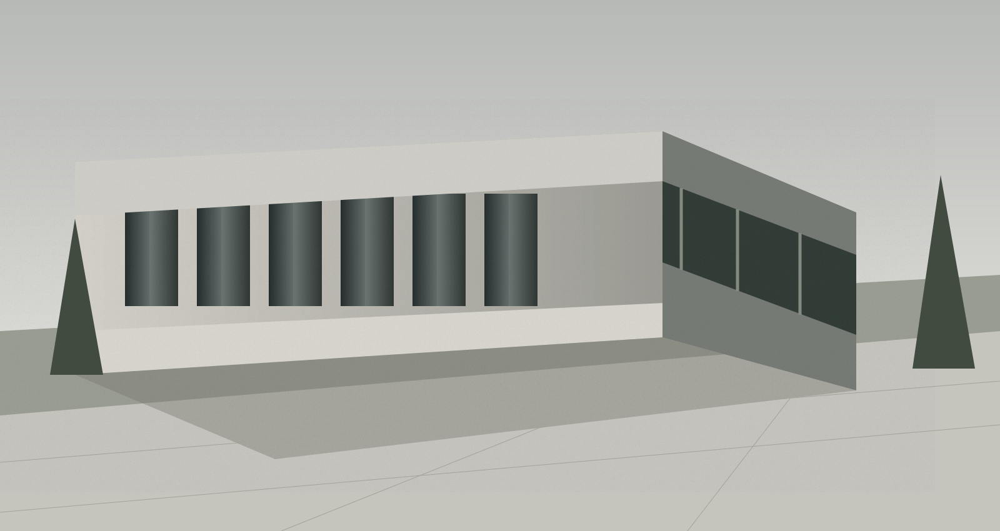
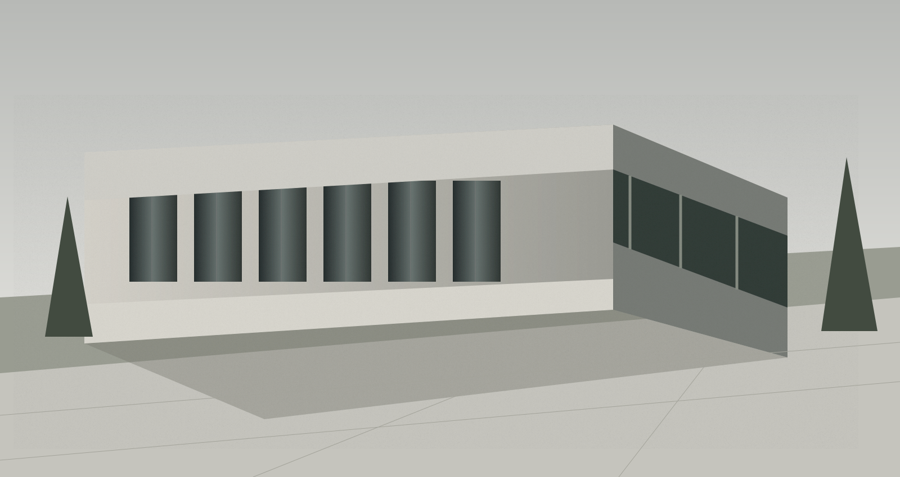
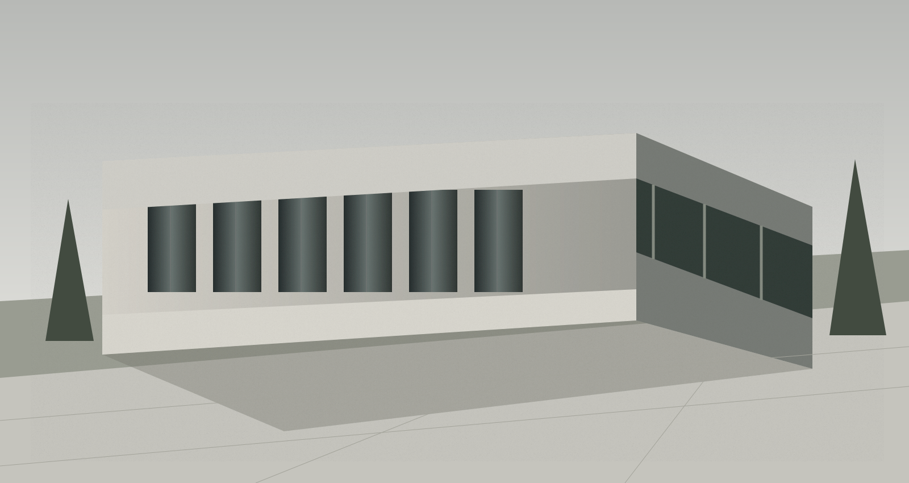

Ver projeto ↗
Casa entre muros
01 ↗Habitação / Porto, 2025

Três escalas. A mesma atenção.
Uma seleção de projetos, 2024—2025.
3 projetos apresentados
Habitação / Porto, 2025

Ver projeto ↗Interiores / Braga, 2024

Ver projeto ↗Equipamentos / Matosinhos, 2025
Não existem projetos nesta tipologia. Escolha outra categoria.
Acreditamos numa arquitetura que escuta antes de desenhar.
Somos um atelier independente no Porto. Cruzamos arquitetura e design de interiores para criar espaços duradouros, atentos ao lugar e às pessoas que os habitam.
Do primeiro esboço ao acompanhamento em obra, trabalhamos em proximidade. Cada decisão procura um equilíbrio entre uso, luz, matéria e recursos.
Uma equipa pequena.
Um diálogo permanente.
Arquiteta · Direção de projeto
Reabilitação, território e a relação entre o construído e a paisagem.
Arquiteto · Coordenação de obra
Rigor construtivo e atenção aos detalhes que atravessam o tempo.
Designer de interiores
Materialidade, luz e espaços desenhados à escala de quem os vive.
Conte-nos o que tem em mente.
Demonstração: os dados são validados apenas neste dispositivo. Nenhuma mensagem é enviada ou guardada.
Porto, Portugal
Reuniões por marcação